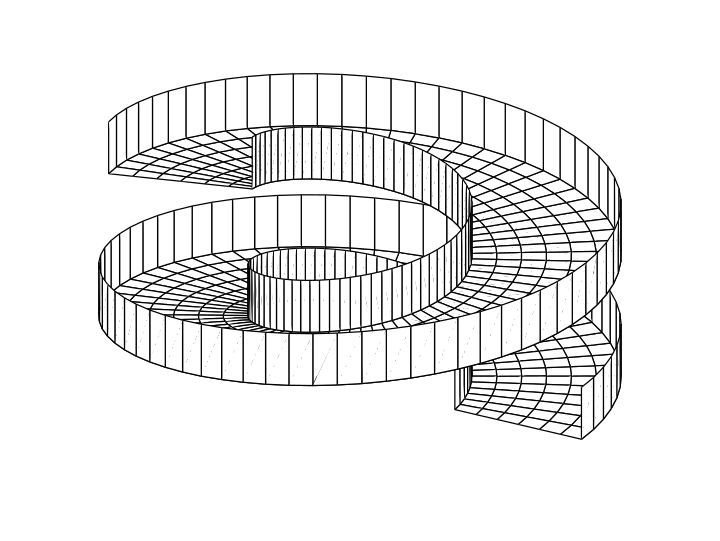

I use mathematics to understand real world problems. Some of my research projects are described below.
Spiral particle separators
My PhD concerned free surface flows in helical channels, such as the one shown below. Such flows are found in spiral particle separators, used in the mining industry. For more information, see this paper about channels with rectangular cross-section, or this one about channels with arbitrary (shallow) cross-section.

Slurry flows
In collaboration with Claudia Falcon and Mike Lindstrom, I worked in the UCLA Applied Math Lab studying particle-laden flows. Such flows feature a variety of interesting phenomena, and we couple mathematical modelling and analysis with experiments to help improve the modelling and understanding of such complex flows.
Human navigation and adversarial games, with specific application to illegal deforestation
We are interested in a variety of problems involving human movement through geography in which the level set method proves to be a powerful tool.
Dijkstra's algorithm is a well-known method for finding optimal paths through weighted graphs. In this project, we formulate an optimal control problem to find the fastest walking route between two locations in mountainous terrain. Our continuous formulation leads to a Hamilton-Jacobi-Bellman equation which we solve numerically and use to determine optimal routes.
Poaching and illegal deforestation are two examples of environmental crime that are of significant concern to many governments around the world. Protected regions such as National Parks are targets for such crime, and with limited budget for patrols, finding effective patrol strategies is an important goal. A previously published model based on game theory and economic modelling is too simple to apply to real-world situations. Our model faithfully extends the model to realistic settings with arbitrarily-shaped regions and includes the effect of terrain features. The level set method is an important tool in this work, allowing us to perform calculations involving movement through arbitrarily-shaped regions. We are able to assess the effectiveness of given patrol strategies to help identify those which would best protect a National Park.
Spatiotemporal analysis of Los Angeles Twitter data
In this project, we use and develop machine learning algorithms to classify tweets collected from the Los Angeles area. We perform topic modelling to calssify tweets into discrete topics and perform further analyses to understand trends in space and time. This project started as an undergraduate project in the UCLA Applied Math REU program and has progressed to involve several PhD students and postdocs. It encompasses both improving topic modelling algorithms and techniques as well as exploration and analysis of a particular dataset of Los Angeles tweets.